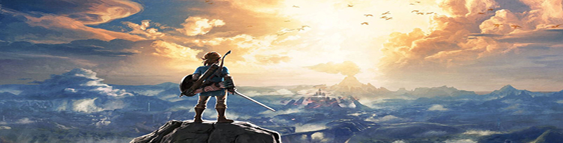

The Legend of Zelda
Milk... It's miiiilk... Can you get tipsy from something like milk?!? Hic! I am not stinky! I take a bath at least once a month! Whenever there's a meeting, a parting is sure to follow. However, that parting need not last forever. Whether a parting be forever or merely for a short time. . . That is up to you. AHH! IT'S LINK! HIDE! I...I shall consume. Consume...Consume everything.Milk... It's miiiilk... Can you get tipsy from something like milk?!? Hic! I am not stinky! I take a bath at least once a month! Whenever there's a meeting, a parting is sure to follow. However, that parting need not last forever. Whether a parting be forever or merely for a short time. . . That is up to you. AHH! IT'S LINK! HIDE! I...I shall consume. Consume...Consume everything.
But one day, a man of great evil found the golden power and took it for himself... With its strength, he commanded darkness across the kingdom... But then, when all hope had died and the hour of doom was at hand, a young boy in green appeared as if from nowhere... This boy, who traveled through time to save the land, was known as the Hero of Time... It was a prosperous land, blessed with green forests, tall mountains, and peace...ut one day, a man of great evil found the golden power and took it for himself... With its strength, he commanded darkness across the kingdom... But then, when all hope had died and the hour of doom was at hand, a young boy in green appeared as if from nowhere... This boy, who traveled through time to save the land, was known as the Hero of Time... It was a prosperous land, blessed with green forests, tall mountains, and peace...
What makes Link the Hero?
I am not stinky! I take a bath at least once a month! I...I shall consume. Consume...Consume everything. Whenever there's a meeting, a parting is sure to follow. However, that parting need not last forever. Whether a parting be forever or merely for a short time. . . That is up to you. It's strange, but the way you look right now sort of looks like this tree...
May the way of the Hero lead to the Triforce. If a person who has an evil heart gets the Triforce, a Hero is destined to appear... and he alone must face the person who began the Great Cataclysm. If the evil one destroys the Hero, nothing can save the world from his wicked reign. Only a person of the Knights Of Hyrule, who protected the royalty of Hylia, can become the Hero...May the way of the Hero lead to the Triforce. If a person who has an evil heart gets the Triforce, a Hero is destined to appear...
Why is Ganon so evil?
No... it was not the boy I underestimated, it was the Triforce of Courage. And what's THAT? Is that the Kokiri Sword? GOOD GRIEF!!! What's that? Oh. So you've got a Deku Shield... Ancient Creators of Hyrule! Now, open the sealed door and send the Evil Incarnation of Darkness into the void of the Evil Realm!! Watch Out!No... it was not the boy I underestimated, it was the Triforce of Courage. And what's THAT? Is that the Kokiri Sword? GOOD GRIEF!!! What's that? Oh. So you've got a Deku Shield... Ancient Creators of Hyrule! Now, open the sealed door and send the Evil Incarnation of Darkness into the void of the Evil Realm!! Watch Out!
You are perhaps the last one to carry on the blood-line of the Knights... It is ironic that the last one in the line has the potential to become the Hero of legend. The man who last claimed the Power Of Gold wished for this world. It reflects his heart. Yes, I came here because of greed for the Golden Power, and look what happened to me... After Agahnim took over, everyone began to act strangely. I suppose it's only a matter of time before I'm affected, too. Well, my mind is getting hazy... Please let me hear the sound of the flute one last time. But what a mischievous thing to leave lying around... The Power Of Gold... Triforce...